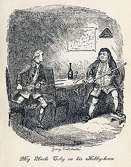

What is a hobby?
Hobby is a regular activity that is done for enjoyment, typically during one's leisure time. Hobbies can include collecting themed items and objects, engaging in creative and artistic pursuits, playing sports, or pursuing other amusements. A list of hobbies is lengthy and always changing as interests and fashions change. By continually participating in a particular hobby, one can acquire substantial skills and knowledge in that area. Engagement in hobbies has increased since the late nineteenth century as workers have more leisure time and advancing production and technology have provided more support for leisure activities. Hobbies tend to follow trends in society, for example stamp collecting was popular during the nineteenth and twentieth centuries as postal systems were the main means of communication, while video games are more popular nowadays following technological advances.
What kinds of hobbies we know?
| Types | Examples |
|---|---|
| Indoor hobbies | Collecting, computer programming, cooking, knife making. |
| Outdoor hobbies | Baseball, basketball, driving, ishing, jogging, sailing. |
| Collection hobbies | Art collecting, book collecting, card collecting, coin collecting. |
| Competitive hobbies | Poker, slot car racing, speedcubing, sport stacking. |
| Observation hobbies | Meditation,microscopy, reading, photography. |
History

The origins pursuits that others thought somewhat childish or trivial. However, as early as 1676 Sir Matthew Hale, in Contemplations Moral and Divine, wrote "Almost every person hath some hobby horse or other wherein he prides himself. He was acknowledging that a "hobby horse" produces a legitimate sense of pride. By the mid 18th century there was a flourishing of hobbies as working people had more regular hours of work and greater leisure time. They spent more time to pursue interests that brought them satisfaction. However, there was concern that these working people might not use their leisure time in worthwhile pursuits. "The hope of weaning people away from bad habits by the provision of counter-attractions came to the fore in the 1830s, and has rarely waned since. Initially the bad habits were perceived to be of a sensual and physical nature, and the counter attractions, or perhaps more accurately alternatives, deliberately cultivated rationality and the intellect. The flourishing book and magazine trade of the day encouraged worthwhile hobbies and pursuits. The burgeoning manufacturing trade made materials used in hobbies cheap and was responsive to the changing interests of hobbyists.
The English have been identified as enthusiastic hobbyists, as George Orwell observed. Another English characteristic which is so much a part of us that we barely notice it … is the addiction to hobbies and spare-time occupations, the privateness of English life. We are a nation of flower-lovers, but also a nation of stamp-collectors, pigeon-fanciers, amateur carpenters, coupon-snippers, darts-players, crossword-puzzle fans. All the culture that is most truly native centres round things which even when they are communal are not official—the pub, the football match, the back garden, the fireside and the 'nice cup of tea'.
Deciding what to include in a list of hobbies provokes debate because it is difficult to decide which pleasurable pass-times can also be described as hobbies. During the 20th century the term hobby usually brought to mind activities such as stamp collecting, embroidery, knitting, painting, woodwork, photography, but not activities like listening to music, watching television or reading. These latter activities bring pleasure but lack the sense of achievement that is usually associated with a hobby. They are usually not structured, organised pursuits, as most hobbies are. The pleasure of a hobby is usually associated with making something of value or achieving something of value. "Such leisure is socially valorised precisely because it produces feelings of satisfaction with something that looks very much like work but that is done of its own sake. "Hobbies are a contradiction: they take work and turn it into leisure, and take leisure and turn it into work.